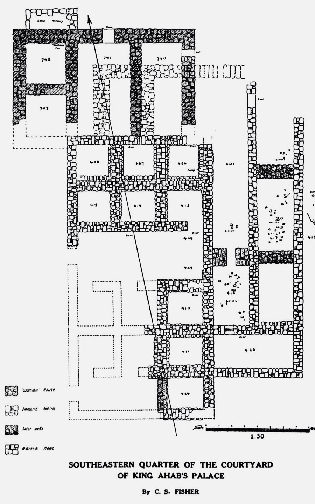

Samaria Ostraca

- Find Name
- Samaria Ostraca
- Historical Period
- Iron Age II
- Artifact Date
- c. 850–750 BC
- Date Discovered
- 1910
- Discovery Location
- Samaria (Sebastia), Israel
- Current Location
- Istanbul Archaeology Museums
- Timeline Era
- Divided Monarchy
- Description
- A collection of 102 inscribed pottery fragments, 63 of them legible, found by George Andrew Reisner's Harvard expedition in a storeroom beneath the royal acropolis of Samaria, capital of the northern kingdom of Israel. Written in ink in Paleo-Hebrew script, they are receipts for jars of aged wine and fine oil delivered to the palace, dated by regnal year and naming the clan districts they came from.
- Biblical Significance
- The ostraca name the clans of Manasseh — Abiezer, Shemida, Helek — the very families listed in Numbers 26 and settled in Joshua 17. A kingdom the Bible describes as wealthy and well-run left behind exactly the kind of palace bookkeeping you would expect: dated, measured, and filed by clan. They put ordinary Israelite names and harvests beside the royal story.
- Evidence Class
- Direct
- Interpretations
- Scholars agree the ostraca are genuine eighth-century palace receipts; the clan names match Numbers 26, though the exact regnal years (ninth, tenth, fifteenth) are debated between kings.
- Scripture Illuminated
- Related Books
- Related Places